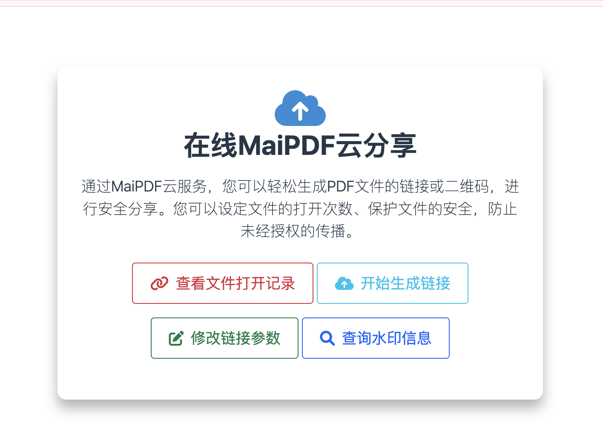
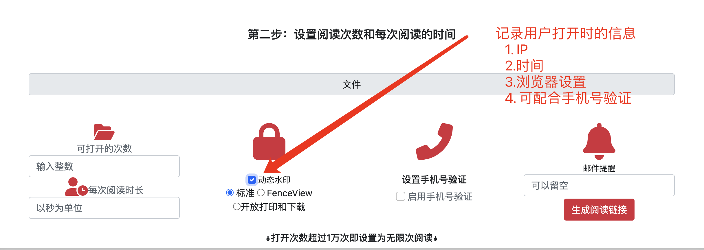
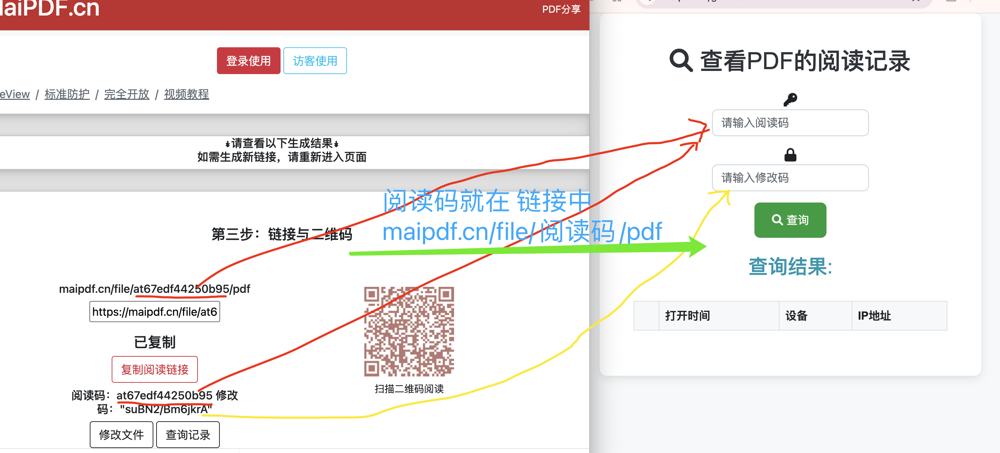

MaiPDF：革命性的PDF追踪和分析解决方案
MaiPDF
是一款创新的PDF文档管理和追踪工具，让您能够轻松地将PDF文件转换为可追踪的链接，并实时监控访问者的行为数据，包括IP地址、访问时间等详细信息。

流程图
交互式流程图
flowchart TD
A[开始] --> B[处理步骤]
B --> C[收集数据]
C --> D[分析结果]
D --> E[完成]
style A fill:#667eea,stroke:#764ba2,stroke-width:2px,color:#fff
style E fill:#48bb78,stroke:#38a169,stroke-width:2px,color:#fff
🚀 MaiPDF核心功能
📊 智能访问追踪
MaiPDF可以准确记录每次PDF文档的访问情况，包括：
- 访问者IP地址 - 精确定位访问来源
- 访问时间 - 详细的时间戳记录
- 访问次数 - 统计文档受关注程度
- 地理位置 - 基于IP的地理信息
🔐 高级安全设置
提供多层次的文档保护机制：
- 动态水印技术
- 访问权限控制
- 手机验证码验证
- 防截图警告

📋 使用MaiPDF的详细步骤
第一步：上传PDF文件
在MaiPDF平台上传您需要追踪的PDF文档。系统支持多种格式和大小的PDF文件。

第二步：配置追踪设置
根据您的需求配置各种追踪和安全选项：
- 设置访问权限
- 配置水印选项
- 启用安全验证

第三步：生成追踪链接
系统会为您的PDF生成唯一的追踪链接和二维码，方便分享给目标用户。

第四步：查看访问记录
通过后台管理界面，您可以实时查看所有的访问记录和统计数据。


🔍 高级功能详解
📈 为什么选择MaiPDF？
🎯 适用场景
- 商务合作 - 追踪合同、提案的查看情况
- 教育培训 - 监控学习资料的访问统计
- 市场营销 - 分析宣传资料的传播效果
- 法律文件 - 确保敏感文档的安全访问
- 产品手册 - 了解用户对产品信息的关注度